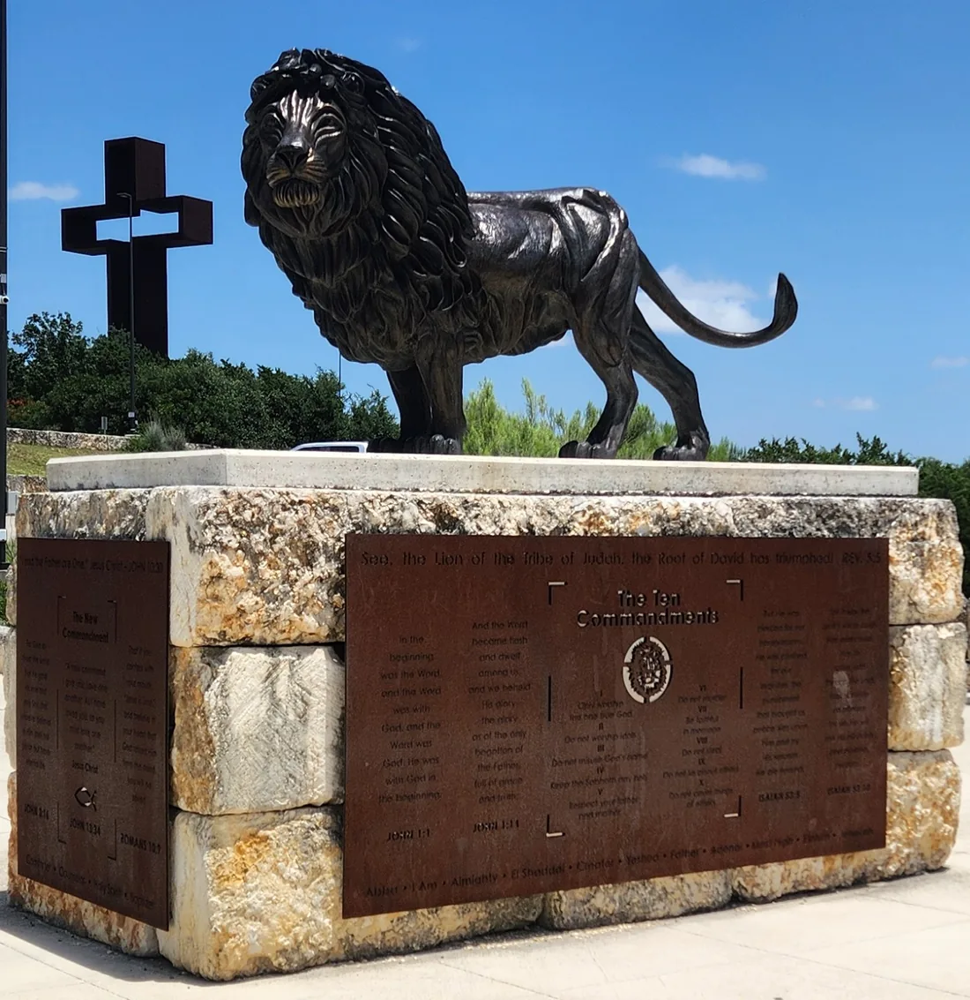

The Coming King Sculpture Prayer Garden in Kerrville, TX
The 77-foot cross that rises above Interstate 10, and the sculpture garden around it. Hours, coordinates, and the story of how it was built, about 35 minutes from Al's Hideaway.
Check Availability & Book Your StayThe Hill Country's “Cross Mountain”

Drive Interstate 10 through Kerrville and you can't miss it: a hollow steel cross standing 77 feet 7 inches tall, about seven stories, on a rise above the highway. Locals call the place Cross Mountain. Its real name is The Coming King Sculpture Prayer Garden, a non-denominational Christian art park on about 24 acres with monumental sculptures, tile mosaics, and quiet places to walk and pray.
It is one of the most visited stops in Kerrville, and Kerrville is only about 35 minutes from Al's Hideaway in Pipe Creek. We are not affiliated with the garden. The details below come from the garden and its foundation, and they may change, so confirm before you go.
Location, Hours & Coordinates
Everything you need to find it.
- Address
- 520 Benson Drive, Kerrville, TX 78028, visible from Interstate 10
- Latitude
- 30.0717° N (approx.)
- Longitude
- 99.1159° W (approx.)
- Hours
- 7 AM to 10 PM daily, per the garden's website
- Phone
- 830-928-7774
- Gift shop
- The Donor Artist Gallery & Gift Shop keeps separate hours. Call 830-367-7874.
- Map
- Open in Google Maps
Coordinates come from the map link on the garden's website. The garden also notes that it sits at about the same latitude as Israel, halfway between the Atlantic and Pacific Oceans on I-10. No admission fee is listed on the garden's website, so call to confirm.
The Story Behind the Cross
From a vision to a 70-ton steel cross, as told by the Coming King Foundation.
- 2002 · The vision
Artist and evangelist Max Greiner Jr. described a vision, received in prayer, of a cross-shaped garden filled with Christian sculptures and a massive hollow cross 77 feet 7 inches tall.
- 2004 – 2005 · Foundation and land
The Coming King Foundation was formed as a nonprofit on May 6, 2004. A 23-acre property near Kerrville was donated to it in 2005, and construction of the garden began on December 13, 2005.
- 2007 – 2009 · Building the cross
Eagle Bronze of Lander, Wyoming fabricated the cross from Cor-Ten steel between August 2007 and October 2009. The finished cross weighs about 70 tons.
- October 30, 2009 · The 1,155-mile trip
The cross was carried to Kerrville in four sections on a five-day journey using seven vehicles, led by Max Greiner Jr. and Eagle Bronze owner Monte Paddleford.
- 2008 – 2010 · A lawsuit
Opponents filed a lawsuit in December 2008 to stop the cross. The foundation reports it won in March 2010.
- July 27, 2010 · The cross is raised
Hundreds of people watched as the cross was raised, with the artist, the foundry, contractors, and donors from around the country helping to fund it. The foundation puts the cost of the sculpture at about $2 million.
- Easter 2011 · Opening
The garden officially opened to the public with an Easter sunrise service.
Also in the garden. Visitors find sculptures including The Coming King with a Living Water Fountain, the Lion of Judah, Christ as Fisher of Men, and The Great Commission, along with tile mosaics and inspirational verses throughout the grounds. Visitors are asked to respect the quiet and reverent atmosphere.
Planning Your Visit
What to expect on your stop.
Open Daily
The garden lists hours of 7 AM to 10 PM every day, so you can fit it into a morning or an evening.
A Quiet Place
Guests are asked to keep the garden peaceful for others. All are welcome.
Photos
The cross is visible from I-10, and many visitors photograph it up close and from the surrounding grounds.
Bring Water
Texas summer heat adds up on a walk around the grounds. Wear comfortable shoes and carry water.
Make It a Kerrville Day Trip
Pair the garden with a few more Hill Country favorites.
Guadalupe River
Kerrville-Schreiner Park offers river swimming, kayaking, and trails. See our Hill Country guide.
Downtown Kerrville
Local dining and shopping on Francisco Lemos Street, plus the Museum of Western Art.
Sources: The Coming King Sculpture Prayer Garden, project history, and construction of the cross.
Stay Where the Trip Really Happens
Al's Hideaway is a family-owned, pet-friendly retreat in Pipe Creek with no pet fees and no cleaning fees.

13 Handcrafted Log Cabins
Real beds, A/C, and pets always free. See the cabins.

RV Sites & Cowboy Campsites
10 full-hookup RV sites and 9 cowboy campsites. See RV & camping.

Pool, Store & 20 Acres
Cool off after your ride and stock up at MeMaw's Country Store.